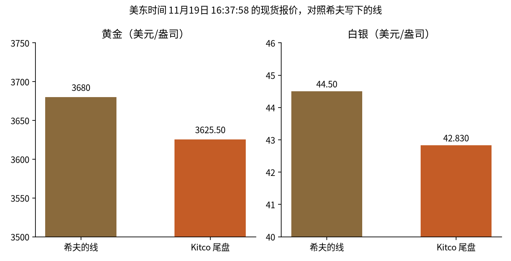

有人把3680当成不该跌破的线，尾盘却报在它下面：周四现货黄金，Kitco写到了哪一个价
彼得·希夫写道，他没想到金价会跌破3680美元、银价会跌破44.50美元，并称这些价格是2025年9月以来没见过的。Kitco下午报告写，美东时间下午4点37分，现货黄金报3625.50美元，跌98.60美元，跌幅2.65%，盘中最低3625.30美元；白银报42.830美元，跌约2.120美元，跌幅4.71%。
避风港的老剧本是：股票跌了，黄金该涨。11月19日，美股三大指数收跌超过2%，黄金没有按这个剧本走。
彼得·希夫在当天写道，以黄金坚固的基本面，他没想到金价会跌破3680美元，也没想到银价会跌破44.50美元，并称这些价格是2025年9月以来没见过的。Kitco当天的下午报告给出了写明时点的纽约尾盘报价：美东时间下午4点37分58秒，现货黄金报3625.50美元一盎司，跌98.60美元，跌幅2.65%；当天最低3625.30美元。白银报42.830美元，跌约2.120美元，跌幅4.71%。这两个尾盘价，都低于希夫写下的那两条线。
周四金价跌，不是「避风港失效」四个字就能说完的。更直接的事实是：股票在跌，美元仍强，利率预期仍偏紧，黄金和白银在纽约下午继续被卖掉。
两条线和一个尾盘价
| 品种 | 希夫写下的线 | Kitco美东16:37:58现货价 | 相对这条线 |
|---|---|---|---|
| 黄金 | 3680美元 | 3625.50美元 | 低于这条线54.50美元 |
| 白银 | 44.50美元 | 42.830美元 | 低于这条线1.670美元 |

54.50美元和1.670美元，是用Kitco写下的尾盘价减去希夫写下的线，当场算出来的。希夫的3680美元和44.50美元，是他写下自己没想到会跌破的价位，不是交易所或官方规则。Kitco的3625.50美元和42.830美元，是该媒体在写明时点后给出的现货报价。前者说明有人认为「不该跌到这里」，后者说明纽约下午已经报在这条线下方。
Kitco把这次下跌写成「14个月低点」。具体到哪一天的收盘才是上一处低点，这篇只用Kitco自己的表述，不另外估一个日期。⚠️ 不同网站对「收盘价」的口径并不一样，有的会报出别的尾盘数字；本文以Kitco下午报告里写明时间的现货报价为准，不在互相冲突的收盘里另估一个中间价。
为什么股票跌了，黄金也会一起被卖掉
Kitco把原因写成几条同时存在的压力：市场预期美联储还会加息、美元偏强、北美股市再次大跌。它写，10年期美债收益率向5.04%回落（前一交易日约5.07%），显示有资金在买国债；但美元仍接近19个月最强水平，继续压着以美元计价的黄金。霍尔木兹海峡和美伊局势相关的紧张还在，却没能压过这几条更硬的卖出理由。
同一份报告也核对了美股收盘：道指跌1101.11点，收49097.06点；标普500跌2.02%，收7175.83点，连跌六个交易日；纳指跌2.25%，收23879.20点。黄金没有成为这次股票下跌的对冲，而是和股票一起下跌。
Kitco还写了当天几项美国数据，用来解释「经济数据偏软，为什么没能缓解黄金跌势」。截至11月14日那一周，初请失业金人数增加到20.3万，高于预期的19.7万；持续申请人数增加到176.3万，也高于预期。费城联储11月制造业指数从10月的20.9降到6.3，明显低于预期的20附近，但读数仍是正值，表示该地区制造业还在扩张。世界大型企业联合会的领先经济指数10月下降0.3%，到99.3。这些数字说的是增长在放缓，并不能单独推出美联储会立即停止加息。
同一份报告写，市场仍大幅押注12月8日至9日的会议加息。期货市场上，对加息25个基点的概率被写成约90%。这是期货隐含的押注，不是已经公布的加息决定。哪怕当天国债收益率回落一点，美元仍然偏强，黄金作为以美元计价的商品，就更难单靠「避险」两个字涨上去。
期货市场上，Kitco写纽约商业交易所西德州中质原油期货结算83.21美元一桶，几乎持平；布伦特原油91.98美元。本文只保留这两笔结算价，不另外从油价推出通胀或买盘结论。
X上怎么看希夫写下的那条线
希夫自己把黄金和比特币对比：他认为黄金本不该跌，比特币则跌得还不够。另有人在美东上午10点50分把黄金、白银、股票、债券，甚至美元指数的下跌写在同一串里，问「如果所有东西都在跌，钱去了哪里」。那是盘中观察，不能直接拿来否定Kitco尾盘所写的美元偏强。这类问题适合提醒读者：同一天里，不同资产可以同时被重新定价，不必先假定「有一笔钱从股票原封不动搬进了黄金」。
也有人继续把金价写成某个更戏剧化的整数低点，却不给出时点和来源。没有核对过的盘中价，不能拿来替换Kitco写下的3625.50美元。
尾盘价说明了什么
能确定的是：Kitco写下的纽约尾盘现货价低于希夫没想到会跌破的3680美元，白银也低于44.50美元；同一天美股收跌，黄金没有按避风港的老剧本走。不能确定的是，这会不会是本轮黄金下跌的最后一截，以及Kitco所说的「14个月低点」之后会不会很快被买回去。
各站报价的时点和口径并不一样，本文采用Kitco写明美东16:37:58的现货报价，不去平均那些互相冲突的收盘数字，也不把希夫的个人判断写成官方低点。
若之后要改看法，可以看金价会不会回到希夫写下的3680美元之上，以及下一次股票大跌时，黄金是跟着跌，还是重新分开走。周四这一天，只说明避风港没有自动生效，还不能说明黄金的长期逻辑已经被推翻。
免责声明：本文内容仅供信息分享，金价与银价转述自Kitco下午报告和公开帖文，不构成任何投资建议。
X 上怎么看
结论 · Kitco写下的纽约尾盘现货价低于希夫的3680美元线，白银也低于44.50美元。这是个人心理线和一份写明时点的媒体报价之间的对照，不是交易所公布的「官方破位」。同一天股票也在跌，黄金没有自动变成避风港。
▲ 看多1 位
▼ 看空4 位
● 分歧或中性1 位
观点为 X 用户当日公开帖子的中文摘要，忠于原文但有删减；标「未核实」的为预测、个人推测或单一来源说法。立场为人工判断。
数据来源
- 现货黄金3625.50美元、跌98.60美元、跌幅2.65%、盘中最低3625.30美元，以及白银42.830美元、跌约2.120美元、跌幅4.71%，时点为美东时间下午4点37分58秒，均来自Kitco 11月19日下午报告。该报告也把这次下跌写成「14个月低点」，并给出美股三大指数收盘、10年期美债收益率向5.04%回落、美元接近19个月最强、WTI结算83.21美元、布伦特91.98美元。
- 3680美元和44.50美元、以及「2025年9月以来没见过」的表述，来自彼得·希夫当天的帖文，是个人判断，不是交易所或官方公布的低点。正文里的54.50美元和1.670美元，是用Kitco尾盘价减去这两条价位得到的算术差。希夫把黄金与比特币对比的说法，来自另一条帖文。TedPillows把美元指数也写进普跌，发于美东上午10点50分，是盘中观察。
- 不同网站对同一天黄金「收盘价」的写法并不一致。本文不以那些互相冲突的数字另估一个中间价，也不把未直接核对本页的伦敦定盘作为收盘依据。
- 美股三大指数收盘也可与CNBC当日市场报道对照，数字一致。
- https://www.kitco.com/news/article/2026-11-19/gold-falls-below-3650-silver-tumbles-fed-rate-concerns-pressure-metals
- https://x.com/PeterSchiff/status/2123446324578132339
- https://x.com/PeterSchiff/status/2123533150450233609
- https://x.com/TedPillows/status/2123443806527709492
- https://www.cnbc.com/2026/11/18/stock-market-today-live-updates.html